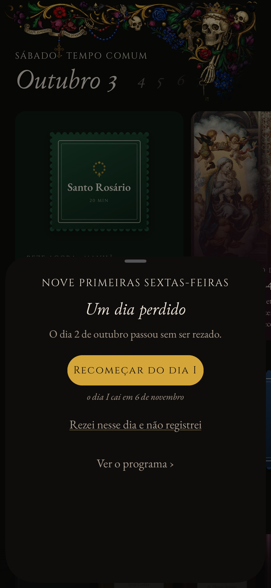
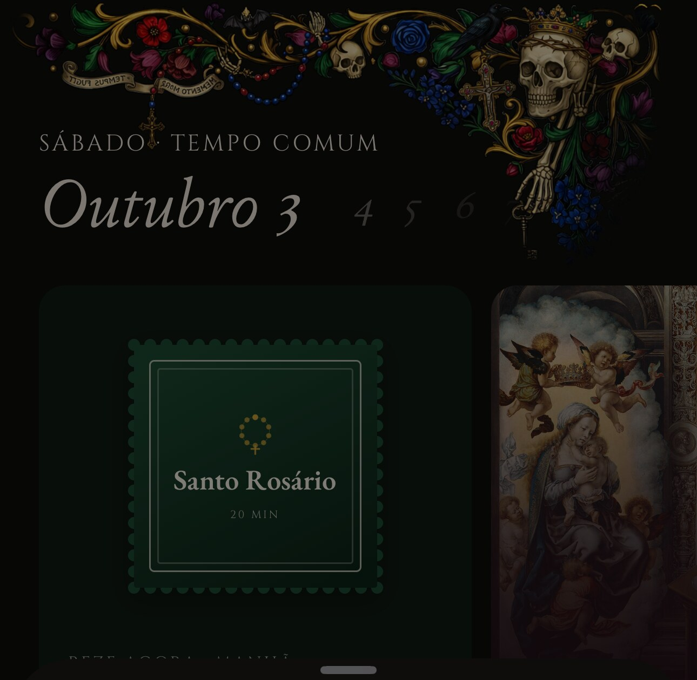

For reference.

The program page's row of stars shows the gap. "Rezei e não registrei" becomes the Today checklist's own tick on the missed day; restart is the outlined button.

The confirm sheet's idiom: two buttons side by side, so both read as answers. No star row.
The sheet asks instead of announcing; the star row shows what is at stake, and the two buttons are the two answers.